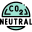

Sustainable North East
About Page
Icons and Images
3 Separate icons were used for this assessment to reprsent the different tweet makers
Climate change icons created by Freepik - Flaticon  Carbon neutral icons created by Freepik - Flaticon Go green icons created by Freepik - Flaticon